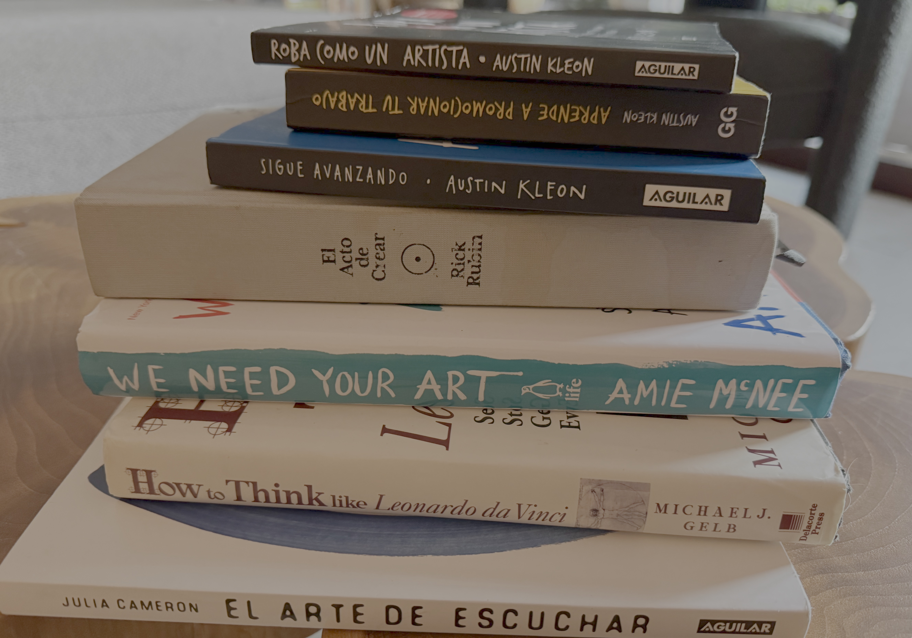
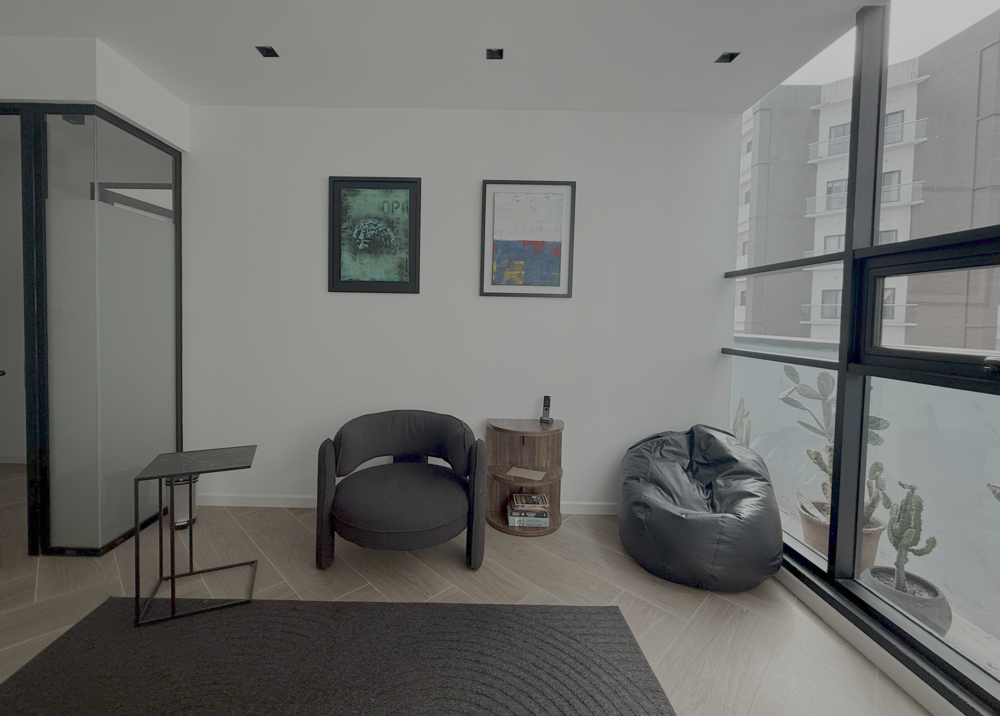

Esto no es productividad.
No es bienestar.
No es una técnica para crear más.
Es un espacio para mirar
lo que evitas
cuando sientes que estás bloqueado.
Crear no es hacer.
Crear es exponerse.
Y casi nadie quiere hacer eso
sin anestesia.
Crear es decir la verdad
sin saber todavía cómo.

A veces el bloqueo no es técnico.
Es vital.
Cuando la vida se aprieta,
la obra se calla.